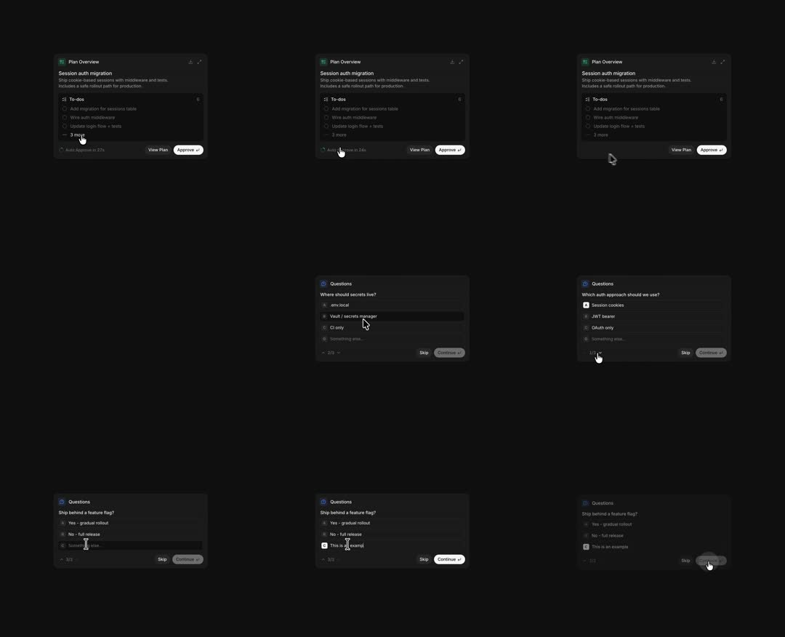

AI Agent Approval Cards: a dark two-card flow for approving an agent's plan - 'Plan Overview' card (task summary, collapsible To-dos with check circles, 'Auto approve in 27s' countdown, View Plan / Approve buttons) hands off to a 'Questions' card (single-select radio rows, pager '2/3', Skip / Continue) that walks 3 questions before approving.
Media
Frame-by-frame

0-25%
Plan Overview card: icon + 'Session auth migration', 2-line description, To-dos group (3 visible rows + '3 more' expander, count badge 6), footer 'Auto approve in 27s' ticking down + View Plan ghost + white Approve button.
25-40%
Approve clicked: card crossfades/slides to Questions card - 'Where should secrets live?' with 4 radio rows (env local, Vault/secrets manager, CI only, Something else...) - hovered row lifts with a border.
40-60%
Q2: 'Which auth approach should we use?' (Session cookies, JWT bearer, OAuth only...); pager '2/3'; a row checks with a filled radio.
60-80%
Q3: 'Ship behind a feature flag?' with rows; user types into the 'Something else' free-text row which expands to an inline input.
80-100%
Continue pressed on last question: card content fades out to a compact confirming state.
Build prompt
Rebuild this interaction 1:1: AI agent approval cards - a dark two-card flow for approving an agent's plan. A "Plan Overview" card (task summary, collapsible to-dos, "Auto approve in 27s" countdown, View Plan / Approve buttons) hands off to a "Questions" card (single-select radio rows, pager "2/3", Skip / Continue) that walks 3 questions before confirming.
## Stack
React + TypeScript + Tailwind + Framer Motion (AnimatePresence for card swaps). Animate transform and opacity only.
## Scene
Dark card. Plan Overview: icon + "Session auth migration", 2-line description, To-dos group (3 visible rows with check circles + "3 more" expander, count badge 6), footer with "Auto approve in 27s" countdown, ghost View Plan, white Approve. Questions card: question title, 4 radio rows (e.g. "Where should secrets live?" - env local / Vault / CI only / Something else...), pager "2/3", Skip / Continue footer. "Something else" expands to an inline free-text input.
## Motion spec
Pattern: stepped wizard flow.
- Card swap (Approve click): crossfade+slide 300ms ease-out (old card exits slightly left, new enters from right).
- Question advance (Continue): 250ms slide, same language; pager updates instantly.
- Row hover: border lifts over 120ms; radio fills with a 150ms pop on select.
- Free-text row: expands in place (height spring, 250ms) with an inline input.
- Final Continue: content fades to a compact confirming state (250ms).
- Countdown: ticks each second in the footer (tabular-nums).
## Calibration
- Card swap 300ms, question advance 250ms - the wizard should feel like one object changing, not pages loading.
- Radio rows are full-width hit areas with hover borders, not tiny circles.
- The countdown is ambient but real: mono digits, never jumping.
## Reduced motion
Card and question swaps as 150ms opacity crossfades; expansions without height animation.
## Don't miss
- The auto-approve countdown creates urgency - style it quiet (zinc-500) but keep it live.
- The to-do expander ("3 more", badge 6) grows the list inline, not a modal.
- "Something else" rows accept free text inline - a defining detail of this flow.
Mechanics
trigger
Approve click; per-question Continue
elements
plan card, to-do list + expander, auto-approve countdown, questions card with radio rows, pager